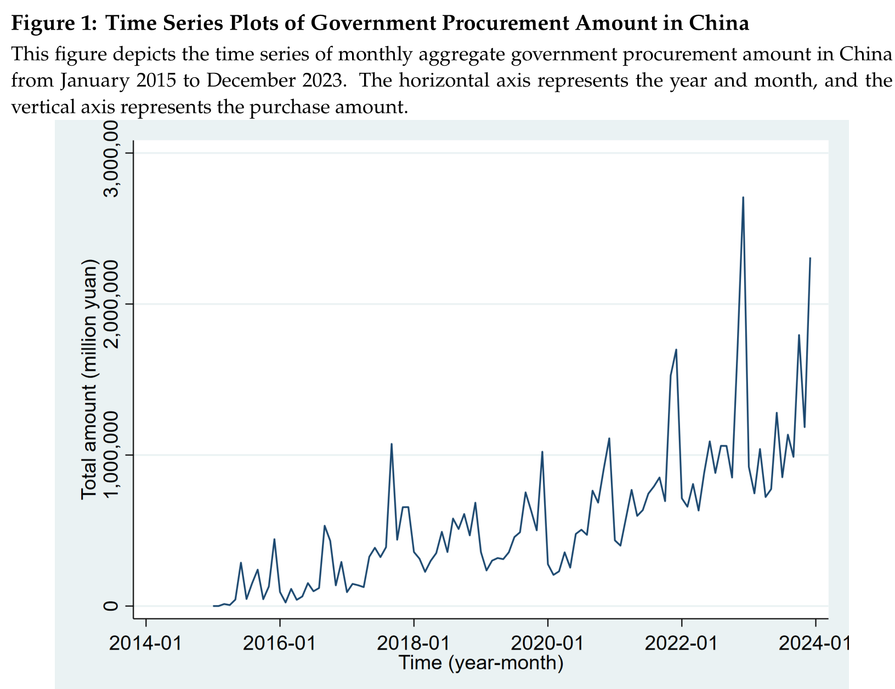
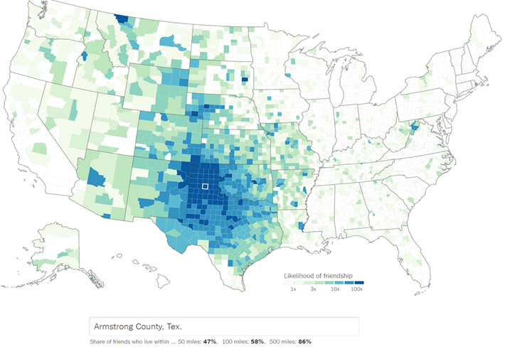

Finance PhD Student at Nanyang Technological University
I am a PhD candidate in Finance from Nanyang Technological University. I started my PhD career from July 2021. My research interests include empirical asset pricing, behavioral finance, social finance, and climate finance.
You can download my full CV here:
Download CVThis paper finds that the monthly growth rate of aggregate procurement has a significantly positive predictive power for Chinese stock market returns over the next two months, followed by reversals at the 4–6 month horizon. This return predictability arises for not only procured but also non-procured firms, which can be explained by investors’ heuristic thinking and attention spillover.
This paper finds that stocks that provide a hedge against “geopolitical risk” earn lower returns on average, consistent with the prediction of the ICAPM and an intertemporal hedging hypothesis. The returns of hedge stocks are particularly low during times of heightened geopolitical events and for firms operating more internationally.
Using the U.S. county-level Social Connectedness Index, I find that investors tilt their portfolios toward more sustainable stocks after their peers in areas that are socially connected to theirs experience natural disasters. Evidence from newly introduced direct flights also confirms that enhanced social interaction amplifies peer effects in sustainable investing.
Email: SHOUYI001@e.ntu.edu.sg